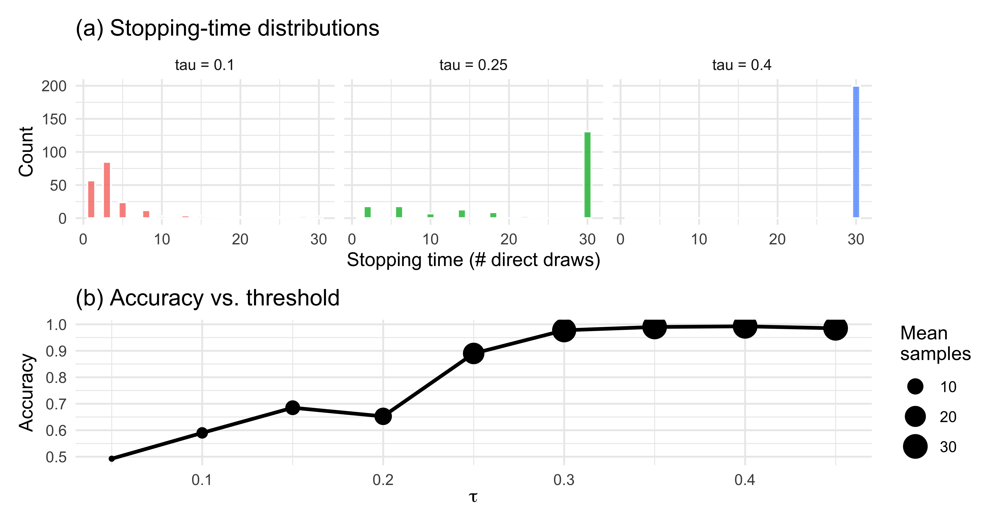
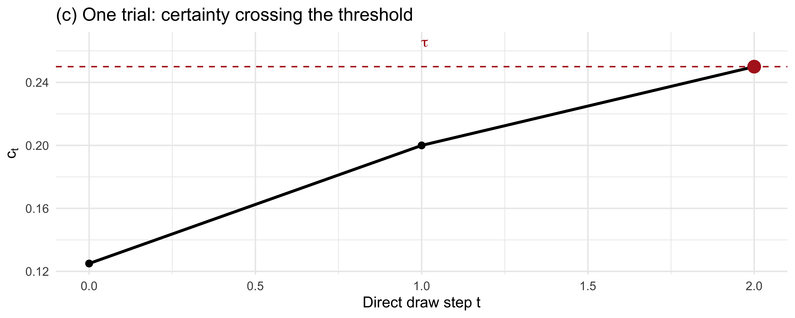
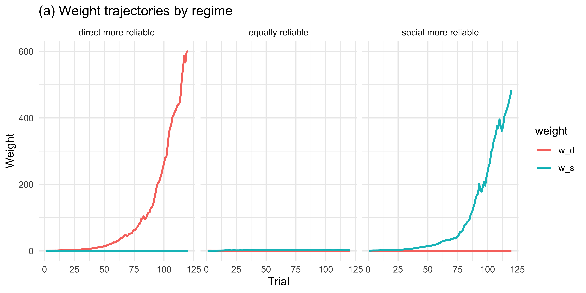
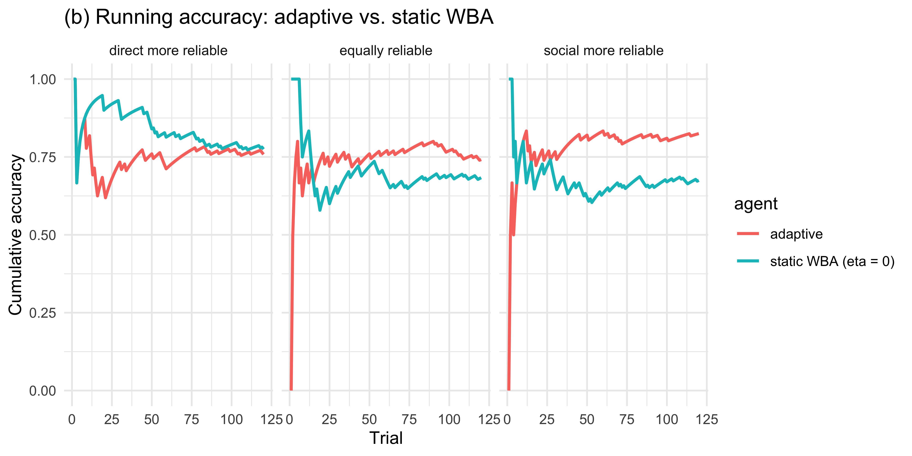
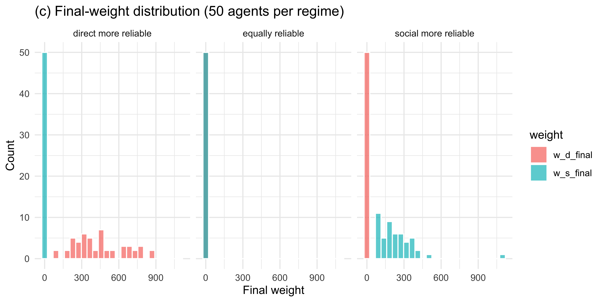
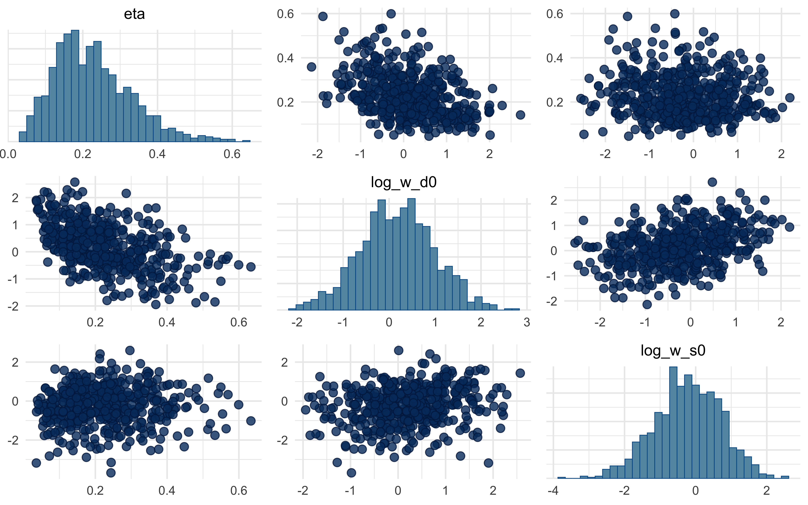

# Simulate one agent with a hard certainty threshold.
# Returns a tibble with one row per trial.
simulate_threshold_agent <- function(tau,
n_trials,
max_samples = 30,
true_theta = 0.7,
social_k = 1,
social_n = 3,
alpha0 = 0.5, beta0 = 0.5) {
purrr::map_dfr(seq_len(n_trials), function(trial) {
alpha_t <- alpha0 + social_k
beta_t <- beta0 + (social_n - social_k)
stopped <- FALSE
t <- 0
while (!stopped && t < max_samples) {
c_t <- abs(alpha_t / (alpha_t + beta_t) - 0.5)
if (c_t >= tau && t >= 1) {
stopped <- TRUE
} else {
t <- t + 1
draw <- rbinom(1, 1, true_theta) # 1 = blue, 0 = red
alpha_t <- alpha_t + draw
beta_t <- beta_t + (1 - draw)
}
}
guess <- as.integer(alpha_t > beta_t)
tibble(
trial = trial,
tau = tau,
T = t,
guess = guess,
correct = as.integer(guess == as.integer(true_theta > 0.5))
)
})
}
# Three agents with different thresholds
sim_threshold <- bind_rows(
simulate_threshold_agent(tau = 0.10, n_trials = 200),
simulate_threshold_agent(tau = 0.25, n_trials = 200),
simulate_threshold_agent(tau = 0.40, n_trials = 200)
) |>
mutate(tau_label = factor(paste0("tau = ", tau)))Appendix A — Sequential Extensions of the Bayesian Agent
Every Bayesian agent we built in Ch. 10 — SBA, WBA, PBA, and their multilevel cousins — shares two strong assumptions. First, the agent is forced to guess on every trial: there is no option to defer, ask for more evidence, or decline. Second, the weights on direct and social evidence are static: whatever trade-off an agent starts with, they carry it through the entire experiment unchanged. Both assumptions are reasonable first-pass idealisations, and both are almost certainly false about real cognition.
This appendix sketches two extensions that relax each assumption in turn. Section A introduces a sample-or-guess agent that decides at every step whether to collect more evidence or commit to a choice. Section B introduces an adaptive-weight agent whose weights drift across trials in response to how well each source predicted recent feedback.
Scope note. These two models are offered as starting points for student projects, not as fully validated contributions. We give the mathematical formalization, an R forward simulation, visualisations of the agents’ behaviour, and a single-agent Stan model fit once for illustration. We deliberately omit parameter recovery, SBC, model comparison, and multilevel extensions — all of these are natural next steps and good exercises. Treat what follows as a skeleton to build on.
A.1 Section A: Sample-or-Guess Agent
A.1.1 Conceptual motivation
The agents in Ch. 10 are committed decision-makers: evidence arrives, they integrate it, and they respond. In many real tasks — clinical diagnosis, foraging, perceptual decision-making under time pressure — the agent instead chooses when to stop sampling. A cautious agent keeps observing marbles until confident; an impulsive one guesses after the first draw. The trade-off is classical: more samples mean better accuracy but higher cost (time, effort, missed opportunities). This family of policies connects the Bayesian-cognition literature to sequential-sampling models of reaction time (e.g., the drift-diffusion model) and to metacognition, where confidence gates commitment.
The key conceptual move is that the observation model now has two outputs per trial. On every step the agent emits a stop/continue decision; when it finally stops, it emits a guess. The likelihood must account for both — a point that is easy to miss when porting the Ch. 10 Stan templates.
A.1.2 Mathematical formalization
Let trial \(i\) consist of a sequence of evidence draws. The agent enters the trial with a prior (we use Jeffreys: \(\alpha_0 = \beta_0 = 0.5\)) and an optional social tip summarised as \((k_s, n_s)\). After observing direct evidence up to step \(t\) — \(k_{d,t}\) blue out of \(t\) direct draws — the posterior over the jar’s blue proportion \(\theta\) is
\[\theta \mid \text{evidence}_t \sim \text{Beta}(\alpha_t,\, \beta_t),\]
with
\[\alpha_t = 0.5 + k_s + k_{d,t}, \qquad \beta_t = 0.5 + (n_s - k_s) + (t - k_{d,t}).\]
Define the agent’s certainty at step \(t\) as
\[c_t \;=\; \left|\, \mathbb{E}[\theta \mid \text{evidence}_t] - 0.5 \,\right| \;=\; \left|\, \frac{\alpha_t}{\alpha_t + \beta_t} - 0.5 \,\right|.\]
The agent’s policy is governed by a single free parameter \(\tau \in (0, 0.5)\):
\[ \text{at step } t: \quad \begin{cases} \text{stop, guess } g_i = \mathbf{1}[\alpha_t > \beta_t] & \text{if } c_t \ge \tau, \\ \text{draw one more marble, increment } t & \text{otherwise.} \end{cases} \]
The data observed per trial are the stopping time \(T_i\) and the final guess \(g_i\). The likelihood factorises as
\[p(T_i, g_i \mid \tau, \text{evidence}) \;=\; \underbrace{\prod_{t=1}^{T_i - 1} \Pr(\text{continue at } t \mid \tau)}_{\text{didn't stop earlier}} \;\cdot\; \underbrace{\Pr(\text{stop at } T_i \mid \tau)}_{\text{stops now}} \;\cdot\; \underbrace{\Pr(g_i \mid \alpha_{T_i}, \beta_{T_i})}_{\text{final guess}}.\]
Two important caveats. First, after the agent stops, the would-be marbles at steps \(T_i + 1, T_i + 2, \ldots\) are not observed. Trials are not i.i.d. sequences of a fixed length; the data are censored by the agent’s own decision. Second, the hard-threshold rule above is non-differentiable in \(\tau\), which breaks HMC. For inference we therefore replace it with a soft version,
\[\Pr(\text{stop at } t \mid \tau) \;=\; \sigma\!\left(\frac{c_t - \tau}{\sigma_\tau}\right),\]
where \(\sigma(\cdot)\) is the logistic function and \(\sigma_\tau\) is a small fixed slope (we use \(\sigma_\tau = 0.02\)). As \(\sigma_\tau \to 0\) the soft rule recovers the hard one.
A.1.3 R forward simulation
A.1.4 Visualisations
# (a) Stopping-time distributions per tau
p_stop <- sim_threshold |>
ggplot(aes(T, fill = tau_label)) +
geom_histogram(binwidth = 1, colour = "white", alpha = 0.8) +
facet_wrap(~tau_label, ncol = 3) +
labs(x = "Stopping time (# direct draws)",
y = "Count",
title = "(a) Stopping-time distributions") +
theme(legend.position = "none")
# (b) Accuracy vs. tau (sweep on a denser grid)
tau_sweep <- seq(0.05, 0.45, by = 0.05)
acc_df <- purrr::map_dfr(tau_sweep, function(tt) {
s <- simulate_threshold_agent(tau = tt, n_trials = 400)
tibble(tau = tt,
accuracy = mean(s$correct),
mean_T = mean(s$T))
})
p_acc <- acc_df |>
ggplot(aes(tau, accuracy)) +
geom_line(size = 1) +
geom_point(aes(size = mean_T)) +
scale_size_continuous(name = "Mean\nsamples") +
labs(x = expression(tau), y = "Accuracy",
title = "(b) Accuracy vs. threshold")
p_stop / p_acc
# (c) Trial-trace: certainty evolving toward the threshold
set.seed(42)
trace_tau <- 0.25
alpha_t <- 0.5 + 1
beta_t <- 0.5 + (3 - 1)
trace <- tibble(
t = 0,
alpha_t = alpha_t,
beta_t = beta_t,
c_t = abs(alpha_t / (alpha_t + beta_t) - 0.5)
)
for (t in 1:20) {
draw <- rbinom(1, 1, 0.75)
alpha_t <- alpha_t + draw
beta_t <- beta_t + (1 - draw)
trace <- bind_rows(trace, tibble(
t = t,
alpha_t = alpha_t, beta_t = beta_t,
c_t = abs(alpha_t / (alpha_t + beta_t) - 0.5)
))
if (abs(alpha_t / (alpha_t + beta_t) - 0.5) >= trace_tau) break
}
stop_t <- max(trace$t)
trace |>
ggplot(aes(t, c_t)) +
geom_line(size = 1) +
geom_point(size = 2) +
geom_hline(yintercept = trace_tau, linetype = "dashed", colour = "firebrick") +
annotate("text", x = 1, y = trace_tau + 0.015,
label = expression(tau), colour = "firebrick", hjust = 0) +
annotate("point", x = stop_t, y = trace$c_t[trace$t == stop_t],
colour = "firebrick", size = 4) +
labs(x = "Direct draw step t", y = expression(c[t]),
title = "(c) One trial: certainty crossing the threshold")
The patterns line up with intuition: a low \(\tau\) produces short, noisy, error-prone trials; a high \(\tau\) produces longer, more accurate trials with diminishing returns.
A.1.5 Single-agent Stan model (soft threshold)
The hard rule above is unsuitable for HMC because it is non-differentiable in \(\tau\). We replace it with a logistic soft rule. The likelihood then becomes a product of Bernoulli stop/continue probabilities plus a Bernoulli for the final guess. Because the direct-evidence sequence itself is a latent variable conditional only on \(T_i\) and the final \((\alpha, \beta)\), we pass the raw per-step draws (reconstructed from the simulation) to Stan as data. In a real analysis the modeller would either record these draws in the experiment or marginalise over them.
# Use the tau = 0.25 agent for fitting. Re-run the simulation but also
# record the sequence of draws for each trial.
simulate_threshold_agent_full <- function(tau, n_trials, max_samples = 30,
true_theta = 0.7,
social_k = 1, social_n = 3) {
draws_list <- vector("list", n_trials)
T_vec <- integer(n_trials)
g_vec <- integer(n_trials)
for (i in seq_len(n_trials)) {
alpha_t <- 0.5 + social_k
beta_t <- 0.5 + (social_n - social_k)
draws_i <- integer(0)
t <- 0
stopped <- FALSE
while (!stopped && t < max_samples) {
c_t <- abs(alpha_t / (alpha_t + beta_t) - 0.5)
if (c_t >= tau && t >= 1) { stopped <- TRUE; break }
t <- t + 1
d <- rbinom(1, 1, true_theta)
draws_i <- c(draws_i, d)
alpha_t <- alpha_t + d
beta_t <- beta_t + (1 - d)
}
T_vec[i] <- t
g_vec[i] <- as.integer(alpha_t > beta_t)
draws_list[[i]] <- draws_i
}
list(T = T_vec, guess = g_vec, draws = draws_list)
}
sim_full <- simulate_threshold_agent_full(tau = 0.25, n_trials = 120)
# Flatten per-trial draws into a padded matrix (max T across trials)
T_max_obs <- max(sim_full$T)
draws_mat <- matrix(0L, nrow = length(sim_full$T), ncol = T_max_obs)
for (i in seq_along(sim_full$draws)) {
if (sim_full$T[i] > 0) {
draws_mat[i, 1:sim_full$T[i]] <- sim_full$draws[[i]]
}
}
stan_data_A <- list(
N = length(sim_full$T),
T_max = T_max_obs,
T = sim_full$T,
guess = sim_full$guess,
draws = draws_mat,
social_k = 1,
social_n = 3,
sigma_tau = 0.02
)ThresholdAgent_stan <- "
// Sample-or-Guess Agent with a soft certainty threshold.
// Single parameter: tau in (0, 0.5), the certainty threshold.
// The stop/continue decision is modelled with a logistic soft rule
// around tau with fixed slope sigma_tau.
data {
int<lower=1> N;
int<lower=1> T_max;
array[N] int<lower=0, upper=T_max> T;
array[N] int<lower=0, upper=1> guess;
array[N, T_max] int<lower=0, upper=1> draws;
int<lower=0> social_k;
int<lower=0> social_n;
real<lower=0> sigma_tau;
}
parameters {
// tau ~ scaled Beta(2,2) on (0, 0.5)
real<lower=0, upper=0.5> tau;
}
model {
// Prior: Beta(2,2) on (0, 0.5) via change of variables -> tau * 2 ~ Beta(2,2)
target += beta_lpdf(2 * tau | 2, 2) + log(2);
for (i in 1:N) {
real alpha_t = 0.5 + social_k;
real beta_t = 0.5 + (social_n - social_k);
// Steps 1 .. T[i] - 1: the agent continued (soft prob of NOT stopping)
// At step T[i]: the agent stopped (soft prob of stopping)
// If T[i] == 0 (agent would stop before seeing any direct draw) we
// only contribute the final guess.
for (t in 1:T[i]) {
int d = draws[i, t];
alpha_t += d;
beta_t += (1 - d);
real c_t = abs(alpha_t / (alpha_t + beta_t) - 0.5);
real p_stop = inv_logit((c_t - tau) / sigma_tau);
if (t < T[i]) {
target += bernoulli_lpmf(0 | p_stop); // continued
} else {
target += bernoulli_lpmf(1 | p_stop); // stopped
}
}
// Final guess given the posterior at stopping time
{
real alpha_final = 0.5 + social_k;
real beta_final = 0.5 + (social_n - social_k);
for (t in 1:T[i]) {
alpha_final += draws[i, t];
beta_final += (1 - draws[i, t]);
}
real p_blue = alpha_final / (alpha_final + beta_final);
target += bernoulli_lpmf(guess[i] | p_blue);
}
}
}
"
write_stan_file(ThresholdAgent_stan,
dir = "stan/",
basename = "ch11_threshold_agent.stan")[1] "/Users/au209589/Dropbox/Teaching/AdvancedCognitiveModeling23_book/stan/ch11_threshold_agent.stan"mod_A <- cmdstan_model("stan/ch11_threshold_agent.stan", dir = "simmodels")
if (regenerate_simulations || !file.exists("simmodels/ch11_fit_A.rds")) {
fit_A <- mod_A$sample(
data = stan_data_A,
seed = 123,
chains = 2,
parallel_chains = 2,
iter_warmup = 500,
iter_sampling = 500,
refresh = 0
)
fit_A$save_object("simmodels/ch11_fit_A.rds")
} else {
fit_A <- readRDS("simmodels/ch11_fit_A.rds")
}fit_A$summary("tau")# A tibble: 1 × 10
variable mean median sd mad q5 q95 rhat ess_bulk ess_tail
<chr> <dbl> <dbl> <dbl> <dbl> <dbl> <dbl> <dbl> <dbl> <dbl>
1 tau 0.241 0.241 0.00228 0.00218 0.237 0.244 1.000 388. 474.mcmc_trace(fit_A$draws("tau"))
The posterior should concentrate near the simulated \(\tau = 0.25\) — but with meaningful width, because the soft rule trades off slope (\(\sigma_\tau\)) against threshold location. The hard-rule identifiability limit is an interesting project question.
A.2 Section B: Adaptive-Weight Agent
A.2.1 Conceptual motivation
The WBA of Ch. 10 commits at \(t = 0\) to fixed weights \(w_d\) and \(w_s\) on direct and social evidence, and carries them through the entire experiment. But a sensible agent should update those weights: if social tips keep steering them wrong, they should trust the social source less; if direct observations keep being misleading (a noisy sensor, say), they should trust themselves less. This turns the static WBA into a learning model, and makes contact with the reinforcement-learning framing of Ch. 3 — except that the thing being learned is not a value, but a meta-parameter governing how two information streams are combined. The resulting agent is Bayesian within a trial (it still integrates evidence via the Beta-Binomial posterior) but RL-like across trials (it updates weights from prediction errors).
This extension also provides a mechanistic story for why real agents might look like different static WBAs at different points in an experiment: they are one agent whose weights have drifted.
A.2.2 Mathematical formalization
On each trial \(t\), the two sources make independent predictions of the correct colour:
\[p_{d,t} = \frac{\alpha_{d,t}}{\alpha_{d,t} + \beta_{d,t}}, \qquad p_{s,t} = \frac{\alpha_{s,t}}{\alpha_{s,t} + \beta_{s,t}},\]
where \((\alpha_{d,t}, \beta_{d,t})\) is the posterior from only the direct evidence on trial \(t\), and \((\alpha_{s,t}, \beta_{s,t})\) is the posterior from only the social evidence. The agent’s combined posterior (and its guess) uses the WBA combination with current weights \(w_{d,t}, w_{s,t}\):
\[\alpha_t = 0.5 + w_{d,t} k_{d,t} + w_{s,t} k_{s,t}, \qquad \beta_t = 0.5 + w_{d,t} (n_{d,t} - k_{d,t}) + w_{s,t} (n_{s,t} - k_{s,t}).\]
After feedback \(y_t \in \{0, 1\}\) on the correct colour, each source’s per-trial prediction error is
\[\delta_{d,t} = y_t - p_{d,t}, \qquad \delta_{s,t} = y_t - p_{s,t}.\]
The weights update on the log scale (to keep them positive) by a delta rule that rewards the source that predicted better:
\[\log w_{d,t+1} = \log w_{d,t} + \eta\,(|\delta_{s,t}| - |\delta_{d,t}|),\] \[\log w_{s,t+1} = \log w_{s,t} + \eta\,(|\delta_{d,t}| - |\delta_{s,t}|).\]
Parameters: learning rate \(\eta \in (0, 1)\) and initial log-weights \(\log w_{d,0}, \log w_{s,0}\).
A.2.3 R forward simulation
# Generate a stream of trials with specified direct/social reliability.
# direct_reliability / social_reliability: probability that the source
# points to the correct colour on any given trial.
make_trial_stream <- function(n_trials, direct_reliability,
social_reliability, n_d = 4, n_s = 3) {
purrr::map_dfr(seq_len(n_trials), function(i) {
correct <- rbinom(1, 1, 0.5) # truth randomly blue/red
# Each direct draw agrees with the truth with prob direct_reliability
k_d <- rbinom(1, n_d, if (correct == 1) direct_reliability
else 1 - direct_reliability)
k_s <- rbinom(1, n_s, if (correct == 1) social_reliability
else 1 - social_reliability)
tibble(trial = i, correct = correct,
k_d = k_d, n_d = n_d, k_s = k_s, n_s = n_s)
})
}
simulate_adaptive_agent <- function(eta, w_d0, w_s0, trial_stream,
alpha0 = 0.5, beta0 = 0.5) {
w_d <- w_d0
w_s <- w_s0
out <- vector("list", nrow(trial_stream))
for (i in seq_len(nrow(trial_stream))) {
tr <- trial_stream[i, ]
# Source-specific posteriors
alpha_d <- alpha0 + tr$k_d
beta_d <- beta0 + (tr$n_d - tr$k_d)
alpha_s <- alpha0 + tr$k_s
beta_s <- beta0 + (tr$n_s - tr$k_s)
p_d <- alpha_d / (alpha_d + beta_d)
p_s <- alpha_s / (alpha_s + beta_s)
# Combined WBA posterior with current weights
alpha_c <- alpha0 + w_d * tr$k_d + w_s * tr$k_s
beta_c <- beta0 + w_d * (tr$n_d - tr$k_d) + w_s * (tr$n_s - tr$k_s)
p_c <- alpha_c / (alpha_c + beta_c)
guess <- rbinom(1, 1, p_c)
# Delta rule on log-weights
y <- tr$correct
d_d <- abs(y - p_d)
d_s <- abs(y - p_s)
w_d <- exp(log(w_d) + eta * (d_s - d_d))
w_s <- exp(log(w_s) + eta * (d_d - d_s))
out[[i]] <- tibble(trial = tr$trial, correct = y, guess = guess,
p_c = p_c, w_d = w_d, w_s = w_s,
k_d = tr$k_d, n_d = tr$n_d,
k_s = tr$k_s, n_s = tr$n_s)
}
bind_rows(out)
}
# Three regimes
set.seed(7)
regimes <- tibble(
regime = c("direct more reliable", "social more reliable", "equally reliable"),
rel_d = c(0.85, 0.55, 0.75),
rel_s = c(0.55, 0.85, 0.75)
)
sim_adapt <- purrr::pmap_dfr(regimes, function(regime, rel_d, rel_s) {
stream <- make_trial_stream(n_trials = 120,
direct_reliability = rel_d,
social_reliability = rel_s)
simulate_adaptive_agent(eta = 0.2, w_d0 = 1, w_s0 = 1, trial_stream = stream) |>
mutate(regime = regime)
})A.2.4 Visualisations
sim_adapt |>
pivot_longer(c(w_d, w_s), names_to = "weight", values_to = "value") |>
ggplot(aes(trial, value, colour = weight)) +
geom_line(size = 0.9) +
facet_wrap(~regime) +
labs(title = "(a) Weight trajectories by regime",
y = "Weight", x = "Trial")
# Compare adaptive agent vs. static WBA (w_d = w_s = 1) on accuracy
set.seed(8)
compare_df <- purrr::pmap_dfr(regimes, function(regime, rel_d, rel_s) {
stream <- make_trial_stream(n_trials = 120,
direct_reliability = rel_d,
social_reliability = rel_s)
adaptive <- simulate_adaptive_agent(0.2, 1, 1, stream) |>
mutate(agent = "adaptive")
static <- simulate_adaptive_agent(0.0, 1, 1, stream) |>
mutate(agent = "static WBA (eta = 0)")
bind_rows(adaptive, static) |> mutate(regime = regime)
})
compare_df |>
mutate(correct_guess = as.integer(guess == correct)) |>
group_by(regime, agent, trial) |>
summarise(acc = mean(correct_guess), .groups = "drop") |>
group_by(regime, agent) |>
mutate(running_acc = cumsum(acc) / seq_along(acc)) |>
ggplot(aes(trial, running_acc, colour = agent)) +
geom_line(size = 0.9) +
facet_wrap(~regime) +
labs(title = "(b) Running accuracy: adaptive vs. static WBA",
y = "Cumulative accuracy", x = "Trial")
# Final-weight distribution across 50 simulated agents per regime
set.seed(9)
final_df <- purrr::pmap_dfr(regimes, function(regime, rel_d, rel_s) {
purrr::map_dfr(1:50, function(a) {
stream <- make_trial_stream(120, rel_d, rel_s)
res <- simulate_adaptive_agent(0.2, 1, 1, stream)
tibble(agent_id = a, regime = regime,
w_d_final = tail(res$w_d, 1),
w_s_final = tail(res$w_s, 1))
})
})
final_df |>
pivot_longer(c(w_d_final, w_s_final), names_to = "weight", values_to = "value") |>
ggplot(aes(value, fill = weight)) +
geom_histogram(bins = 25, alpha = 0.7, position = "identity", colour = "white") +
facet_wrap(~regime) +
labs(title = "(c) Final-weight distribution (50 agents per regime)",
x = "Final weight", y = "Count")
Across 50 simulated agents the weights track the true reliability asymmetry: when direct evidence is more reliable, \(w_d\) grows and \(w_s\) shrinks; the pattern reverses when social evidence is more reliable; and when the two are matched, weights drift modestly in either direction without systematic asymmetry.
A.2.5 Single-agent Stan model
# Fit to one direct-more-reliable agent
set.seed(11)
stream_fit <- make_trial_stream(120, direct_reliability = 0.85,
social_reliability = 0.55)
sim_fit <- simulate_adaptive_agent(0.2, 1, 1, stream_fit)
stan_data_B <- list(
N = nrow(sim_fit),
guess = sim_fit$guess,
correct = sim_fit$correct,
k_d = sim_fit$k_d,
n_d = sim_fit$n_d,
k_s = sim_fit$k_s,
n_s = sim_fit$n_s
)AdaptiveAgent_stan <- "
// Adaptive-Weight Agent.
// Parameters: eta (learning rate), log w_d0, log w_s0 (initial log-weights).
// Weights are updated across trials by a delta rule on log-weights using
// per-source absolute prediction errors against the feedback.
data {
int<lower=1> N;
array[N] int<lower=0, upper=1> guess;
array[N] int<lower=0, upper=1> correct;
array[N] int<lower=0> k_d;
array[N] int<lower=0> n_d;
array[N] int<lower=0> k_s;
array[N] int<lower=0> n_s;
}
parameters {
real<lower=0, upper=1> eta;
real log_w_d0;
real log_w_s0;
}
transformed parameters {
vector[N] p_c;
{
real log_w_d = log_w_d0;
real log_w_s = log_w_s0;
for (i in 1:N) {
real w_d = exp(log_w_d);
real w_s = exp(log_w_s);
real alpha_d = 0.5 + k_d[i];
real beta_d = 0.5 + (n_d[i] - k_d[i]);
real alpha_s = 0.5 + k_s[i];
real beta_s = 0.5 + (n_s[i] - k_s[i]);
real p_d = alpha_d / (alpha_d + beta_d);
real p_s = alpha_s / (alpha_s + beta_s);
real alpha_c = 0.5 + w_d * k_d[i] + w_s * k_s[i];
real beta_c = 0.5 + w_d * (n_d[i] - k_d[i]) + w_s * (n_s[i] - k_s[i]);
p_c[i] = alpha_c / (alpha_c + beta_c);
real d_d = abs(correct[i] - p_d);
real d_s = abs(correct[i] - p_s);
log_w_d += eta * (d_s - d_d);
log_w_s += eta * (d_d - d_s);
}
}
}
model {
target += beta_lpdf(eta | 2, 5);
target += normal_lpdf(log_w_d0 | 0, 1);
target += normal_lpdf(log_w_s0 | 0, 1);
target += bernoulli_lpmf(guess | p_c);
}
"
write_stan_file(AdaptiveAgent_stan,
dir = "stan/",
basename = "ch11_adaptive_agent.stan")[1] "/Users/au209589/Dropbox/Teaching/AdvancedCognitiveModeling23_book/stan/ch11_adaptive_agent.stan"mod_B <- cmdstan_model("stan/ch11_adaptive_agent.stan", dir = "simmodels")
if (regenerate_simulations || !file.exists("simmodels/ch11_fit_B.rds")) {
fit_B <- mod_B$sample(
data = stan_data_B,
seed = 321,
chains = 2,
parallel_chains = 2,
iter_warmup = 500,
iter_sampling = 500,
refresh = 0
)
fit_B$save_object("simmodels/ch11_fit_B.rds")
} else {
fit_B <- readRDS("simmodels/ch11_fit_B.rds")
}fit_B$summary(c("eta", "log_w_d0", "log_w_s0"))# A tibble: 3 × 10
variable mean median sd mad q5 q95 rhat ess_bulk ess_tail
<chr> <dbl> <dbl> <dbl> <dbl> <dbl> <dbl> <dbl> <dbl> <dbl>
1 eta 0.227 0.213 0.104 0.0989 0.0813 0.419 1.00 770. 649.
2 log_w_d0 0.181 0.182 0.812 0.810 -1.13 1.54 1.00 581. 571.
3 log_w_s0 -0.233 -0.206 0.939 0.951 -1.80 1.25 1.000 624. 690.mcmc_trace(fit_B$draws(c("eta", "log_w_d0", "log_w_s0")))
mcmc_pairs(fit_B$draws(c("eta", "log_w_d0", "log_w_s0")))
A note on what you will almost certainly see in the pairs plot: a strong ridge between \(\eta\) and the initial log-weights. This is not a bug — it is structural. A small \(\eta\) with strongly asymmetric starting weights produces similar behaviour to a large \(\eta\) with symmetric starts, because both paths arrive at similar effective weights by the end of the trial stream. We flag this rather than hide it: demonstrating and resolving the non-identifiability (via informative priors, via parameter-informative experimental designs that force the weights to change across blocks, or via multilevel partial pooling) is a natural student project.
A.3 Closing
The Bayesian-cognition hypothesis is a family of models, not a single commitment. Once an agent represents beliefs as probability distributions and integrates evidence by Bayes’ rule, many further modelling choices remain open: when to stop sampling, how to weight sources, whether those weights themselves are learned, what the observation model looks like. The sample-or-guess and adaptive-weight agents above are natural sequential extensions of the Ch. 10 family and make good starting points for student projects — a full validation battery (parameter recovery, SBC, model comparison, multilevel pooling) on either model is left as an exercise in applying the workflow you have already learned.